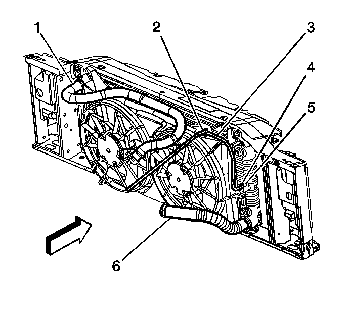
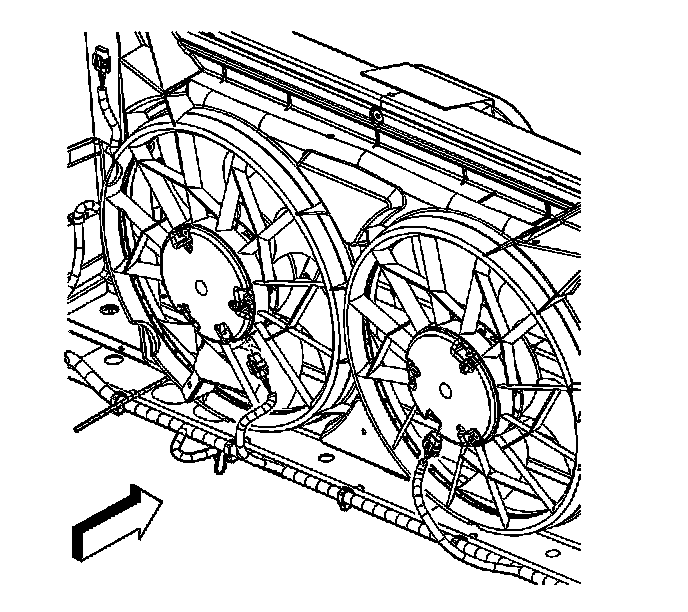
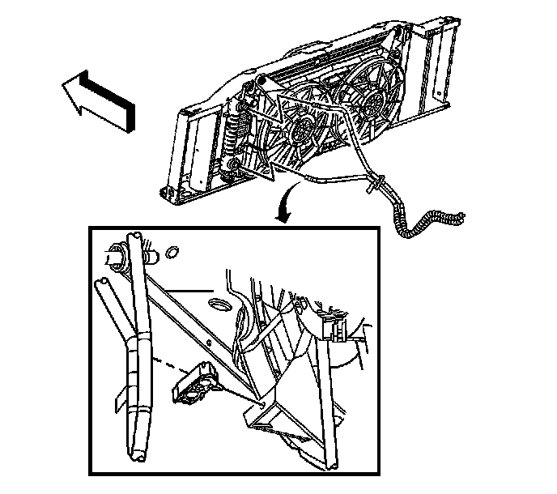
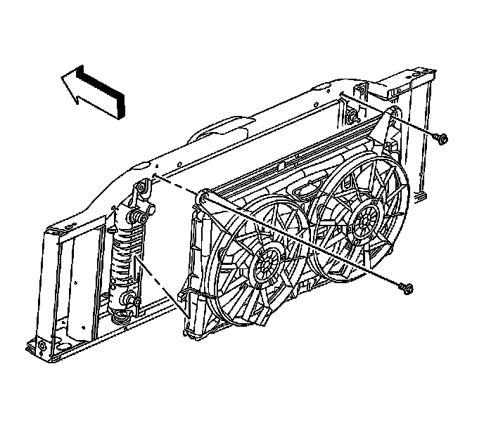

Cooling Fan and Shroud Replacement
Cooling Fan and Shroud Replacement
Removal Procedure

1. Disengage the radiator inlet hose clip (2) at the fan shroud.

2. If necessary, reposition the surge tank inlet hose clamp at the radiator.
3. If necessary, remove the surge tank inlet hose from the radiator.

4. Disconnect the electrical connectors from the cooling fans.
5. Remove the clip attaching the wiring harness to the shroud.
6. Remove transmission cooler lines bolts from fan shroud, (Qty: 2).

7. If necessary, open the engine oil cooler line clip and remove the cooler lines from the clip.

8. Remove the cooling fan shroud bolts.
9. Remove the cooling fan and shroud.
Installation Procedure
Important: Insert the 3 lower tabs into the radiator support flange. Keeping the shroud parallel to the radiator will ensure the correct installation of the lower tabs.
1. Install the cooling fan and shroud.
Notice: Refer to Fastener Notice.
2. Install the cooling fan shroud bolts.
Tighten the bolts to 9 N.m (80 lb in).
3. If equipped, install the cooler lines to the clip and close the clip.
4. Connect the electrical connectors to the cooling fans.
5. Install the clip attaching the wiring harness to the shroud.
6. Install transmission cooling lines bolts to fan shroud.
Tighten the bolts to 4 N.m (35 lb in).
8. If necessary, install the surge tank inlet hose to the radiator.
9. If necessary, reposition the surge tank inlet hose clamp at the radiator.
10. Engage the radiator inlet hose clip (2) at the fan shroud.